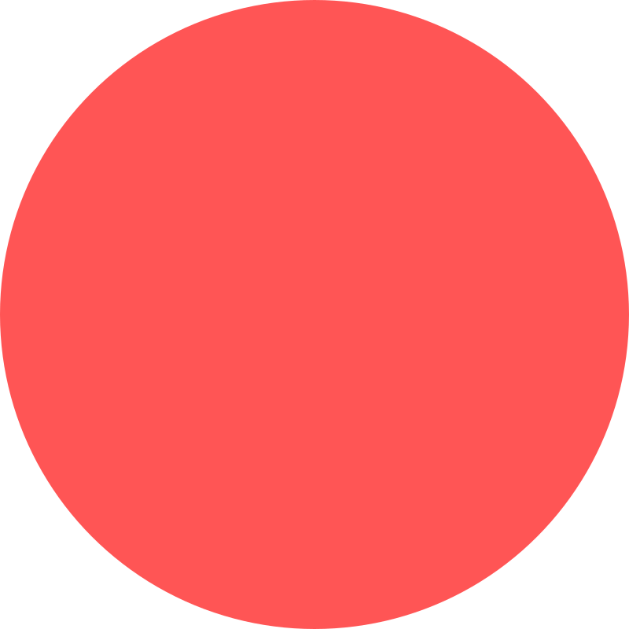
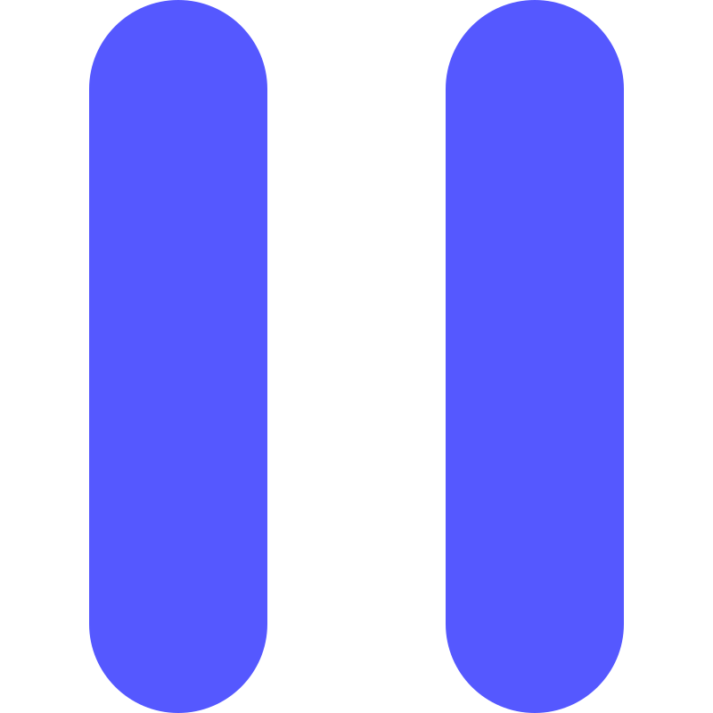

1
2
3
4
5
6
7
8
9
10
11
12
13
14
15
16
/ 4
Undo
Redo
MML@... 붙여넣기
변환
불러오기
조작 가이드
한
日
En
PC 버전
Track 1
Track 2
Track 3
Track 4
Track 5
Track 6
00:00.000 / 00:00.000


녹음 볼륨
24px
편집 모드
1
2
4
8
16
32
12
24
48
노트 생성
Beat+
Bar+
Beat-
Bar-
복사
잘라내기
붙여넣기
볼륨-
볼륨+
녹음 적용 옵션
스냅 단위
1
2
4
8
16
32
셋잇단 포함